與訊息互動
編輯訊息
訊息及檔案分享的說明文字可在傳送後 6 小時內進行編輯。

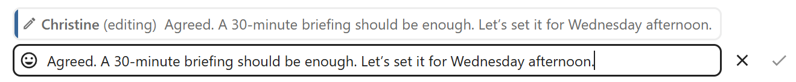
釘選訊息
主持人可將重要訊息釘選於對話中，維持一段時間或直到不再相關為止。

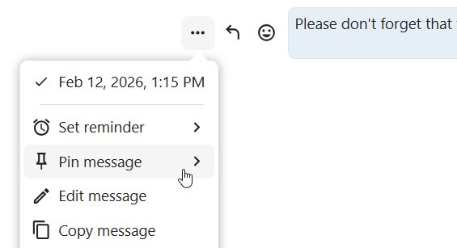
已釘選的訊息會被突出顯示，並可在聊天上方或內容側邊欄的 Shared items 分頁中查看。如不再需要，可透過快速操作為所有人或僅為自己取消釘選。

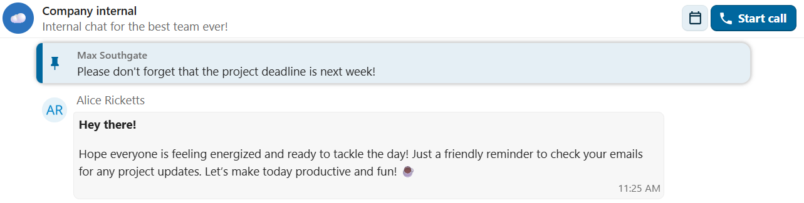
為訊息設定提醒
你可以為特定訊息設定提醒。如有重要訊息希望稍後收到通知，只需將滑鼠移至該訊息並點擊提醒圖示。

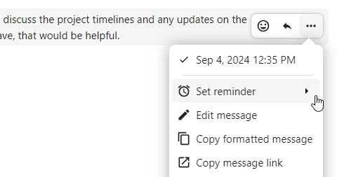
在子選單中，你可以選擇稍後接收通知的時間。

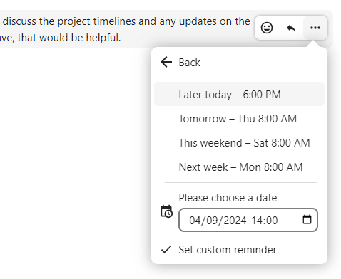
你亦可以透過 ... 選單將訊息轉發至其他對話，或傳送至你的 Note to self 對話以作個人參考。
在對話中搜尋訊息
除了全域統一搜尋外，你亦可以在特定對話中搜尋訊息。在對話的內容側邊欄中，點擊搜尋圖示以開啟搜尋分頁。

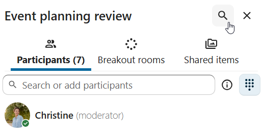
你可以使用日期範圍、發送者等篩選條件來縮窄搜尋結果。

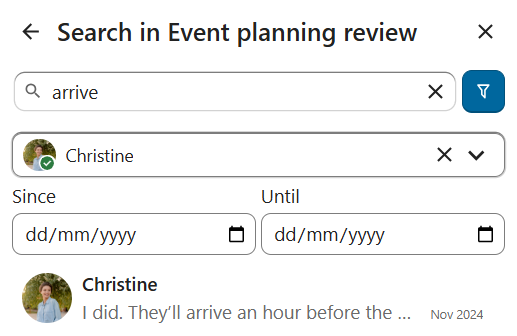
討論串訊息
你可以在對話中建立討論串，以保持討論有條理。建立討論串的選項可於新訊息的額外操作中找到。

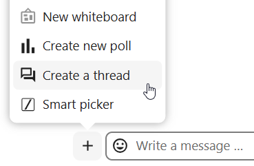
其後，你可以為討論串加入標題及描述，並開始討論。

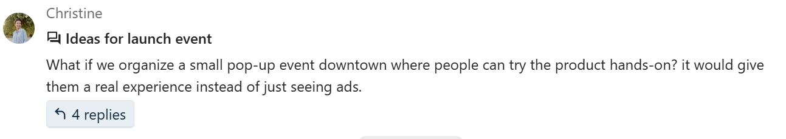
你可以透過訊息上的回覆按鈕，或內容側邊欄的 Shared items 分頁查看討論串中的所有回覆。

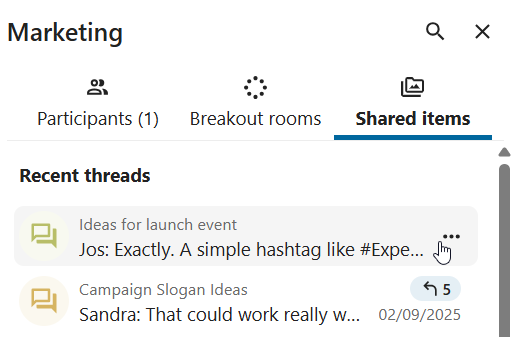
你可以訂閱討論串，以接收新回覆的通知。可於討論串本身或側邊欄進行訂閱。

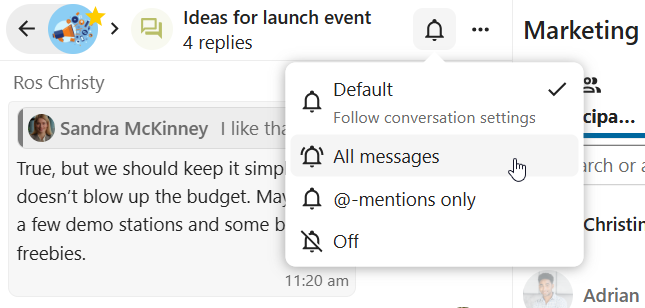
已訂閱的討論串可於導覽列中的 Threads 分頁輕鬆存取。

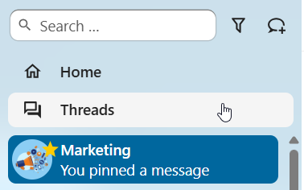
你可以在討論串本身或側邊欄中編輯討論串標題。

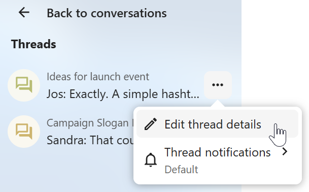
私下回覆
私下回覆會將原訊息直接轉發到你與原發送者的一對一對話，方便你在有需要時私下回覆。
在群組或公開對話中，選取你想私下回覆的訊息
在訊息操作選單中選擇
私下回覆系統會開啟一對一對話視窗，並引用原訊息
輸入回覆並傳送訊息
回覆會附上所引用訊息的完整背景，包括原發送者的姓名、原對話的背景資料，以及返回原訊息的連結。

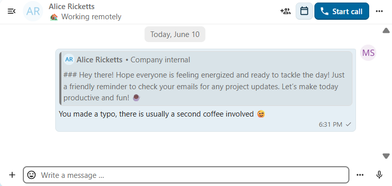
訊息回應
你可以用表情符號回應訊息，快速表示同意、慶祝或表達感受，省卻輸入完整回覆。
將滑鼠指標移到聊天中的一則訊息上
在訊息操作選單中按一下
新增回應按鈕從常用表情符號清單或完整的表情符號選擇器中選取一個表情符號
將滑鼠指標移到某個回應上，即可查看哪些其他用戶用了這個表情符號。按一下現有回應，即可以相同的表情符號回應。再按一下便可移除你對該訊息的回應。

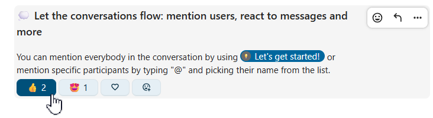